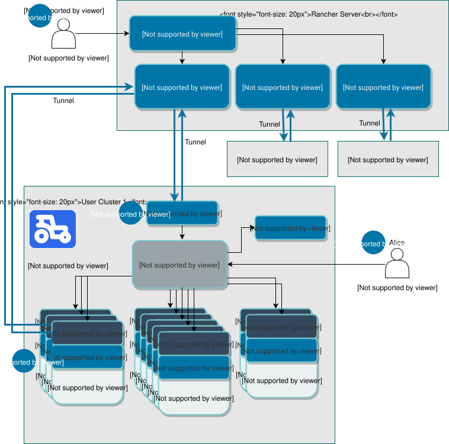
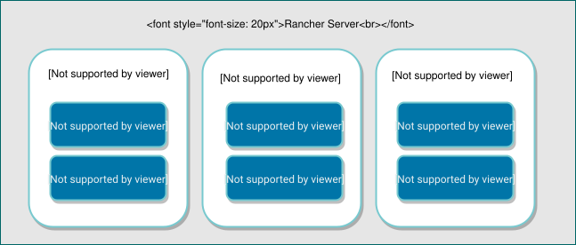

与下游用户集群通信
本节描述了Rancher如何配置和管理运行您的应用程序和服务的下游用户集群。
下图显示了集群控制器、集群代理和Rancher系统代理如何使Rancher控制下游集群。

以下描述对应于上图中的数字：
1.身份验证代理
在此图中，一个名为Bob的用户想查看在名为用户集群1的下游用户集群上运行的所有Pod。在Rancher中，他可以运行一个`kubectl`命令来查看Pod。Bob通过Rancher的身份验证代理进行身份验证。
身份验证代理将所有Kubernetes API调用转发到下游集群。它与本地身份验证、Active Directory和GitHub等身份验证服务集成。在每个Kubernetes API调用中，身份验证代理验证调用者并在将调用转发到Kubernetes主节点之前设置适当的Kubernetes模拟头。
Rancher使用一个 服务帐户与Kubernetes集群进行通信。Rancher中的每个用户账户与下游集群中的相应服务帐户相关联。Rancher使用服务账户来 模拟用户，这提供了用户应有的所有权限。
默认情况下，Rancher生成一个kubeconfig文件，其中包含通过Rancher服务器代理连接到下游用户集群的Kubernetes API服务器的凭据。kubeconfig文件（kube_config_rancher-cluster.yml）包含对集群的完全访问权限。
2.集群控制器和集群代理
每个下游用户集群都有一个集群代理，它在 Rancher 服务器内打开与相应集群控制器的隧道。
每个下游集群都有一个集群控制器和一个集群代理。每个集群控制器：
-
监视下游集群中的资源变化
-
将下游集群的当前状态带到所需状态
-
配置对集群和项目的访问控制策略
-
通过调用所需的 Docker 机器驱动程序和 Kubernetes 引擎来配置集群
默认情况下，为了使 Rancher 能够与下游集群通信，集群控制器连接到集群代理。如果集群代理不可用，集群控制器可以连接到 Rancher 系统代理。
集群代理，也称为 cattle-cluster-agent，是一个在下游用户集群中运行的组件。它执行以下任务：
-
连接到 Rancher 启动的 Kubernetes 集群的 Kubernetes API
-
管理每个集群内的工作负载、Pod 创建和部署
-
应用每个集群全局策略中定义的角色和绑定
-
通过与集群控制器的隧道在集群和 Rancher 服务器之间传递事件、统计信息、节点信息和健康状况
3.Rancher System Agent
如果集群代理（也称为 cattle-cluster-agent）不可用，Rancher 系统代理会创建一个隧道到集群控制器以与 Rancher 通信。
rancher-system-agent 在 RKE2 和 K3s Kubernetes 集群的每个节点上运行。它用于在执行集群操作时与节点进行交互。集群操作的示例包括升级 Kubernetes 版本和创建或恢复 etcd 快照。
4.授权集群端点
授权集群端点（ACE）允许用户在不通过Rancher身份验证代理路由请求的情况下，连接到下游集群的Kubernetes API服务器。
ACE可用于与Rancher一起配置或注册的RKE2和K3s集群。它不适用于托管Kubernetes提供商中的集群，例如亚马逊的EKS。
用户可能需要授权集群端点的两个主要原因是：
-
在Rancher宕机时访问下游用户集群
-
在Rancher服务器与下游集群之间距离较远的情况下减少延迟
`kube-api-auth`微服务被部署以提供授权集群端点的用户身份验证功能。当您使用`kubectl`访问用户集群时，集群的Kubernetes API服务器通过将`kube-api-auth`服务作为Webhook进行身份验证。
与授权集群端点一样，`kube-api-auth`身份验证服务也仅适用于Rancher启动的Kubernetes集群。
*示例场景:*假设Rancher服务器位于美国，而用户集群1位于澳大利亚。用户Alice也住在澳大利亚。Alice可以通过使用Rancher UI操作用户集群1中的资源，但她的请求必须从澳大利亚发送到位于美国的Rancher服务器，然后再代理回澳大利亚，即下游用户集群所在的位置。地理距离可能导致显著的延迟，Alice可以通过使用授权集群端点来减少这种延迟。
启用此端点后，Rancher在kubeconfig文件中生成一个额外的Kubernetes上下文，以便直接连接到集群。该文件包含`kubectl`和`helm`的凭据。
|
要在您的kubeconfig中使用ACE上下文，请在启用后运行`kubectl use-context <ace context name>`。 |
有关更多信息，请参阅关于使用 kubectl 和 kubeconfig 文件 访问您的集群的部分。
我们建议导出 kubeconfig 文件，以便在 Rancher 停止运行时，您仍然可以使用文件中的凭据访问您的集群。
模拟
用户在技术上仅存在于上游集群中。Rancher 创建了 角色绑定和集群角色绑定，这些绑定引用了 Rancher 用户，尽管在下游集群中 没有实际的用户资源。
当用户通过身份验证代理与下游集群交互时，必须有某个实体在下游充当这些请求的执行者。Rancher 创建服务帐户来充当该实体。每个服务帐户仅被授予一个权限，即 模拟 它们所属的用户。如果只有一个服务帐户可以模拟任何用户，那么恶意用户就有可能破坏该帐户并通过模拟其他用户来提升其权限。此问题是 CVE 的基础。
模拟故障排除
在下游集群中，有五个资源处理模拟：
-
名称空间：
cattle-impersonation-system -
服务帐户：
cattle-impersonation-system/cattle-impersonation-<user ID> -
帐户词元密钥：
cattle-impersonation-system/cattle-impersonation-<user ID>-token-<hash> -
集群角色：
cattle-impersonation-<user ID> -
集群角色绑定：
cattle-impersonation-<user ID>
在这个典型的模拟集群角色示例中，系统配置为使用 github 作为身份验证提供者：
apiVersion: rbac.authorization.k8s.io/v1
kind: ClusterRole
metadata:
creationTimestamp: "2021-10-06T18:20:13Z"
labels:
authz.cluster.cattle.io/impersonator: "true"
cattle.io/creator: norman
name: cattle-impersonation-user-abcde
resourceVersion: "3528"
uid: a7478731-72a0-4343-b09f-c3bf12552d77
rules:
# allowed to impersonate user user-abcde
- apiGroups:
- ""
resourceNames:
- user-abcde
resources:
- users
verbs:
- impersonate
# allowed to impersonate listed groups
- apiGroups:
- ""
resourceNames:
- github_team://123 # group from GitHub auth provider
- system:authenticated # automatic group from Kubernetes
- system:cattle:authenticated # automatic group from Rancher
resources:
- groups
verbs:
- impersonate
# allowed to impersonate principal ID github_user://098
- apiGroups:
- authentication.k8s.io
resourceNames:
- github_user://098 # principal ID from GitHub auth provider
resources:
- userextras/principalid
verbs:
- impersonate
# allowed to impersonate username example
- apiGroups:
- authentication.k8s.io
resourceNames:
- example # username from GitHub auth provider
resources:
- userextras/username
verbs:
- impersonate当您排查模拟问题时，请检查这些资源是否存在于用户中，以及集群角色中的规则是否与上述内容相似。例如：
kubectl --namespace cattle-impersonation-system get serviceaccount cattle-impersonation-<user ID>
kubectl --namespace cattle-impersonation-system get secret cattle-impersonation-<user ID>-token-<hash>
kubectl get clusterrole cattle-impersonation-<user ID> --output yaml
kubectl get clusterrolebinding cattle-impersonation-<user ID>如果您在 UI 中看到与 "模拟" 相关的错误，请特别注意错误消息的 结束，这应该指示请求失败的真正原因。
重要文件
下面提到的文件是维护、故障排除和升级您的集群所需的：
-
config.yaml：RKE2 和 K3s 集群配置文件。 -
rke2.yaml或k3s.yaml：您 RKE2 或 K3s 集群的 Kubeconfig 文件。此文件包含对集群的完全访问权限的凭据。如果 Rancher 出现故障，您可以使用此文件与 Rancher 启动的 Kubernetes 集群进行身份验证。
有关在没有 Rancher 身份验证代理的情况下连接到集群和其他配置选项的更多信息，请参阅 kubeconfig 文件 文档。
用于配置 Kubernetes 集群的工具
Rancher 用于配置下游用户集群的工具取决于正在配置的集群类型。
Rancher 为托管在基础设施提供商中的节点启动 Kubernetes
Rancher 可以在 Amazon EC2 中动态配置节点，然后在其上安装 Kubernetes。
Rancher 使用 docker-machine. 配置此类型的集群
托管 Kubernetes 提供商
在设置此类型的集群时，Kubernetes 由 Amazon Elastic Container Service for Kubernetes 安装。
Rancher 使用 kontainer-engine. 配置此类型的集群。
Rancher 服务器组件和源代码
该图展示了构成 Rancher 服务器的各个组件：

Rancher 的 GitHub 储存库可以在以下链接找到：
-
Norman, Rancher 的 API 框架
这是部分最重要的 Rancher 储存库。有关 Rancher 源代码的更多详细信息，请参阅 为 Rancher 做贡献 部分。要查看 Rancher 中使用的所有库和项目，请在 rancher/rancher 储存库中查看 go.mod 文件。